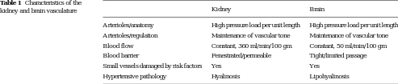

|

corpus-oa-validation/10.1007_s12975-016-0499-x/tables/table1/table.svg.png
|
| kidney and brain vasculature |
Kidney |
Brain |
| Arterioles/anatomy |
High pressure load per unit length |
High pressure load per unit length |
| Arterioles/regulation |
Maintenance of vascular tone |
Maintenance of vascular tone |
| Blood flow |
Constant, 360 ml/min/100 gm |
Constant, 50 ml/min/100 gm |
| Blood barrier |
Fenestrated/permeable |
Tight/limited passage |
| Small vessels damaged by risk factors |
Yes |
Yes |
| Hypertensive pathology |
Hyalinosis |
Lipohyalinosis |
corpus-oa-validation/10.1007_s12975-016-0499-x/tables/table1/table.svg.html
|